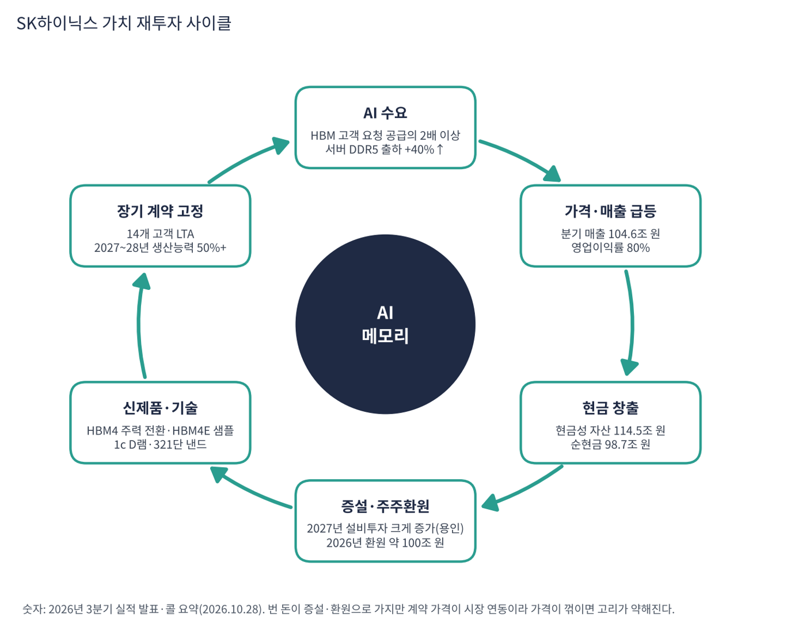

SK하이닉스는 D램 세계 2위, 낸드 세계 상위권의 메모리 반도체 전업 회사다. AI 가속기 옆에 붙는 고대역폭 메모리(HBM)에서 세계 1위이며 엔비디아의 핵심 공급사다. 낸드 자회사 솔리다임(옛 인텔 낸드 사업)을 갖고 있다.
| 항목 | 내용 |
|---|---|
| 종목 | SK하이닉스 (000660) · KRX · 메모리 반도체 · 1983년 설립(현대전자) · 본사 경기도 이천 |
| 시가총액 | 약 1,018조 원 (트레이딩뷰, 11/6 종가 1,132,000원) |
| 최근 분기(26.3Q) | 매출 104.6조 원(+328%), 영업이익 83.3조 원(+632%, 이익률 80%), 순이익 39.8조 원, EBITDA 87.7조 원(마진 84%) |
| 4분기 전망(회사) | D램 출하 전 분기 대비 20%대 중반 증가, 낸드 한 자릿수 중반 증가, HBM4가 HBM3E를 넘어 주력 제품 (가격 전망은 미제시) |
| 주주환원 | 2026 회계연도 약 100조 원(현금배당 30조+, 자사주 매입·소각 60조+). 3분기 배당 주당 2만 원(특별배당 1만 원 포함) |
| 다음 실적 | 4Q26: 2027년 1월 말 발표 예정 |
| 직책 | 인물 | 역할·특징 |
|---|---|---|
| 대표이사 사장(CEO) | 곽노정 | 3분기 발표에서 "기술 경쟁력으로 쌓은 고객 신뢰가 장기 계약으로 이어지면서 중장기 수요 가시성과 수익 안정성을 갖춘 사업 구조로 변화하고 있다"고 설명 |
경영 스타일: '기술 1위로 신뢰를 쌓고, 그것을 장기 계약으로 고정한다'. 14개 주요 고객과 장기공급계약(LTA)을 맺어 2027~2028년 생산능력의 50% 이상을 미리 팔았고 계약 가격에 '시장 연동 범위'를 넣었다. 이익은 FCF의 50% 이상을 환원하는 원칙으로 주주와 나눈다(전략적 투자 성과는 대부분 특별배당).
HBM4가 3분기 본격 양산·출하되고 수율이 계획을 웃돌았다. 4분기에는 출하량·매출 모두 HBM3E를 앞서 주력이 된다. HBM4E는 2분기 샘플을 냈고 1c(10나노급 6세대) D램, AI 서버용 LPDDR5 SOCAMM, 321단 TLC eSSD를 키운다.
경기순환 메모리 회사에서 벗어나 고객이 몇 년 앞 생산능력을 예약하고 공급자는 그 계약을 담보로 투자하는 구조를 만든다. 엔비디아와 다년 차세대 메모리 기술 파트너십(2026년 8월)이 상징이다.
| 분기 | 매출 | YoY | 영업이익 | 이익률 | 순이익 | 특징 |
|---|---|---|---|---|---|---|
| 2024.4Q | 19.8조 | +75% | 8.1조 | 41% | 8.0조 | HBM이 D램 매출의 40% 이상 |
| 2025.1Q | 17.6조 | +42% | 7.4조 | 42% | 8.1조 | 계절적 비수기 |
| 2025.2Q | 22.2조 | +35% | 9.2조 | 41% | 7.0조 | HBM3E 12단 확대 |
| 2025.3Q | 24.4조 | +39% | 11.4조 | 47% | 12.6조 | 범용 D램 가격 반등 시작 |
| 2025.4Q | 32.8조 | +66% | 19.2조 | 58% | 15.2조 | D램·낸드 가격 급등 |
| 2026.1Q | 52.6조 | +198% | 37.6조 | 72% | 40.3조 | 고용량 서버 모듈·eSSD 확대 |
| 2026.2Q | 79.3조 | +257% | 60.5조 | 76% | 93.9조 | 투자 이익(키옥시아 등)으로 순이익 > 매출 |
| 2026.3Q | 104.6조 | +328% | 83.3조 | 80% | 39.8조 | HBM4 본격 출하, 매출 첫 100조 |

흐름 요약: 성장은 두 단계였다. 2024년 4분기~2025년 3분기는 HBM이 이끈 완만한 성장(매출 20조 원 안팎, 이익률 40%대)이었고, 2025년 4분기부터는 범용 메모리 가격이 이끈 폭발적 성장이다. AI 서버가 HBM뿐 아니라 일반 서버 D램과 SSD까지 빨아들여 모든 메모리 가격이 올랐고 매출은 4개 분기 만에 3배가 됐다. 순이익은 영업 밖 항목에 크게 흔들린다. 2026년 2분기 순이익 93.9조 원이 매출보다 큰 것은 키옥시아 등 투자자산 이익 때문이고, 3분기에는 환율 관련 순손실 11.6조 원과 투자자산 평가손실 22.9조 원이 겹쳐 순 영업외비용이 32.6조 원이었다(세부 합계 34.5조 원과의 차이 약 1.9조 원은 콜 요약에서 설명되지 않아 분기보고서 확인이 필요하다). 본업은 영업이익과 EBITDA 마진으로 봐야 한다.
| 제품 | 누구에게 무엇을 파나 | 3분기 출하 | 3분기 가격 |
|---|---|---|---|
| HBM | 엔비디아 등 AI 가속기 회사. D램을 수직으로 쌓아 GPU 옆에 붙이는 고대역폭 메모리. HBM4 3분기 본격 양산·출하 | D램 전체 약 +10% | D램 전체 +20%대 후반 |
| 서버 D램 | 클라우드 회사의 AI·일반 서버용 DDR5, 고용량 모듈, AI 서버용 LPDDR5 SOCAMM | 서버 DDR5 +40% 이상 | – |
| 모바일·PC D램 | 스마트폰·PC 제조사용 LPDDR·DDR | – | – |
| 낸드 | 데이터센터용 eSSD(321단 TLC), 솔리다임 QLC 고용량 SSD, 모바일 저장장치 | 소폭 감소(고부가 전환) | +20%대 중반 |
SK하이닉스는 메모리만 판다. 그래서 실적은 D램과 낸드의 '출하량 × 가격'으로 거의 설명된다. 매출의 중심은 '데이터센터'로 완전히 옮겨갔다(증권사 추정: 2026년 상반기 D램 매출에서 서버 D램·HBM 합산 60% 초과, 낸드는 eSSD가 절반 초과 — 회사가 공개한 수치가 아니다). 가격 결정 방식이 바뀌고 있다. 장기 계약에 "고객과 합의한 가격 범위 안에서 시장 상황을 반영"하는 방식을 넣어 가격이 오를 때 일부를 누리고 떨어질 때 바닥을 확보하는 구조다. HBM 매출 비중과 고객별 매출(엔비디아 비중)은 공개되지 않는다.
곽노정 CEO는 "중장기 수요 가시성과 수익 안정성을 갖춘 사업 구조로 변화하고 있다"고 요약했다. 목표는 네 가지다.
| 목표 | 구체적 계획 |
|---|---|
| 1. 경기순환에서 벗어나기 | 14개 주요 고객과 LTA, 2027~2028년 생산능력 50% 이상. 일부 고객과 통상 5년인 계약 기간 연장 논의, 시장 연동 가격 범위 도입 |
| 2. AI 메모리 풀스택 | HBM4 → HBM4E, 1c D램 확대, AI 서버용 LPDDR5 SOCAMM, 321단 eSSD, 중장기 HBF(고대역폭 플래시) |
| 3. 생산능력 | 연말까지 M15X 생산능력 최대, 2027년 용인 1기 팹 본격 가동, 투자 규모 2026년보다 크게 증가 |
| 4. 주주와 성과 공유 | FCF의 50% 이상 환원, 전략적 투자(키옥시아 등) 성과는 특별배당 |


위: 트레이딩뷰 주봉 데이터로 재구성(10·20·40주선). 아래: 트레이딩뷰 공개 차트 일봉 캡처(작도 숨김, 이동평균선·볼린저밴드만 표시).
| 이동평균 | 값 | 종가 대비 | 해석 |
|---|---|---|---|
| 5일선 | 1,332,400 | -15.0% | 11/5(-9.5%), 11/6(-10.4%) 연속 급락 |
| 20일선 | 1,350,200 | -16.2% | 5일선과 겹쳐 하락 중 |
| 50일선 | 1,591,020 | -28.9% | 9~10월 박스(1,560,000~1,935,000원)의 하단 |
| 100일선 | 1,795,880 | -37.0% | 6월 고점 영향으로 가장 높음 |
| 200일선 | 1,507,400 | -24.9% | 10월 둘째 주 이탈 |
배열은 100일 > 50일 > 200일 > 20일 ≈ 5일 > 주가다. 6월 고점(2,987,000원) 이후 7월 말 1,246,000원까지 -58% 1차 급락, 8~10월 1,560,000~1,935,000원 박스, 10월 둘째 주 박스 이탈(한 주 -24%), 10월 말 반등 실패, 11월 첫 주 1,089,000원까지 밀렸다. 거래량은 20일 평균의 207%로 투매 성격이 짙다.
| 규칙 | 기준 | 현재 값 | 신호 |
|---|---|---|---|
| 장기 추세 필터 | 종가 vs 200일선 | 1,132,000 < 1,507,400 | 매도 |
| 중장기 교차 | 50일선 vs 200일선 | 1,591,020 > 1,507,400 | 매수 |
| 단기 교차 | 20일선 vs 50일선 | 1,350,200 < 1,591,020 | 매도 |
| 돈키언 채널 | 55일 고가 1,935,000 / 저가 1,089,000 | 중간값 1,512,000 아래 | 매도 |
| 1개월 모멘텀 | 21거래일 수익률 | -34.3% (기준 1,723,000) | 매도 |
| 3개월 모멘텀 | 63거래일 수익률 | -28.2% (기준 1,577,000) | 매도 |
| 6개월 모멘텀 | 126거래일 수익률 | -12.0% (기준 1,286,000) | 매도 |
| 12개월 모멘텀 | 252거래일 수익률 | +111.6% (기준 535,000) | 매수 |
| 종합 (8개 평균) | -0.50 | 매도 우위 |
해석: 삼성전자와 같은 구조다. 단기·중기 신호는 모두 매도이고 12개월 모멘텀(1년 전 53만 원대)과 50/200일 교차만 매수로 남았다. 지금 가격이 이어지면 2027년 3~4월에 12개월 신호도 매도로 바뀔 수 있다. 14일 ATR 118,786 (10.5%)(주가의 10.5%)로 하루 10만 원 이상 움직이는 것이 보통이다.
| 가격 | 무엇이 바뀌나 | 의미 |
|---|---|---|
| 1,286,000원 | 6개월 모멘텀 기준 | 회복 시 매도 신호 하나 감소 |
| 1,350,000원 | 20일선 | 단기 반등 확인 |
| 1,507,000원 | 200일선 | 장기 추세 필터 매수 전환, 추세 복귀 확인 |
| 50일선 < 200일선 | 데드크로스 (간격 83,600원) | 종합 -0.75로 악화 |
| 구분 | 가격대 | 근거 |
|---|---|---|
| 저항 2 | 1,450,000 ~ 1,507,000원 | 피보나치 61.8%(1,450,650원), 200일선 |
| 저항 1 | 1,246,000 ~ 1,350,000원 | 7월 말 저점·10월 종가대, 5·20일선 |
| 지지 1 | 1,033,000 ~ 1,089,000원 | 11/6 저가 1,089,000원 + 피보나치 78.6%(1,033,000원) |
| 지지 2 | 880,000 ~ 920,000원 | 2026년 3월 박스 중심 |
역대 최강의 펀더멘털과 역대 최대의 정점 공포가 맞서는 구간이다. 변동성이 극단적이라 비중은 작게, 손절 폭은 넓게 가져간다. 1,089,000~1,132,000원에서 계획 비중의 30%, 1,033,000원 부근에서 20%를 진입하고(평균 1,080,000원·손절 960,000원 기준 손익비 1:2.2~1:3.6), 1,350,000원 회복 시 20%, 1,507,000원 회복 시 30%를 추가한다. 1차 1,350,000원에서 40%, 2차 1,450,000~1,507,000원에서 40% 익절한다. 1,033,000원 종가 이탈 시 비중을 줄이고 960,000원에서 손절한다.
| 악재 요인 | 내용 | 강도 |
|---|---|---|
| 사이클 정점 | 2027~2028년 용인·평택·마이크론 신규 팹 동시 가동. 시장 연동 가격 구조상 가격 하락이 계약에도 일부 반영 | 높음 |
| HBM 경쟁 | 삼성 HBM4 세계 최초 양산·HBM4E 샘플, 마이크론 추격. 엔비디아 내 점유율 변화 | 중간~높음 |
| 고객 집중 | HBM 매출의 상당 부분이 엔비디아에 집중. 엔비디아 보증·벤더 파이낸싱 리스크가 간접 전이 | 중간 |
| 영업외 변동 | 환율·투자자산 평가로 분기 순이익이 수십조 원씩 흔들림 | 중간 |
| 투자 부담 | 2027년 설비투자 대폭 증가, 솔리다임 IPO 검토 중단 후 대체 자금 조달 | 참고 |
| 티커 | 회사 | 시가총액 | PER(TTM) | PEG | P/S | EPS 성장(YoY) |
|---|---|---|---|---|---|---|
| 000660 | SK하이닉스 | 약 1,018조 원 | 약 5.4배 (TTM 순이익) | 0.01 (의미 제한) | 3.8배 | 영업외 손익 영향 큼 |
| MU | 마이크론 | $781B | 9.3배 | 0.01 | 5.59배 | +879% |
| SNDK | 샌디스크 | $119B | 6.7배 | – | 4.18배 | – |
| WDC | 웨스턴디지털 | $99B | 10.2배 | 0.04 | 6.36배 | +275% |
| STX | 시게이트 | $106B | 24.2배 | 0.15 | 7.06배 | +144% |
| TSM | TSMC | $1,630B | 24.2배 | 0.39 | 12.03배 | +59% |
| NVDA | 엔비디아 | $4,498B | 23.6배 | 0.20 | 15.63배 | +125% |
트레이딩뷰는 한국 종목 재무 데이터를 제공하지 않아 SK하이닉스 값은 발표 실적으로 직접 계산했다. 삼성전자와의 비교는 삼성전자 보고서를 참고.
비교 결론: SK하이닉스 PER 약 5.4배는 마이크론(9.3배)·웨스턴디지털(10.2배)보다도 낮다. 메모리 동종 모두가 PER 한 자릿수에서 거래된다는 것은 시장이 메모리 이익을 정점으로 본다는 같은 신호다. 가장 낮은 PER을 받는 이유는 영업이익률 80%의 지속 가능성에 대한 의심이다.
SK하이닉스는 적자 기업이 아니다. 현금성 자산 114.5조 원에 차입금 15.8조 원이라 순현금 98.7조 원(부채비율 5%)이다. 런웨이 대신 주주환원과 2027년 설비투자 급증이 순현금을 얼마나 쓰는지를 점검했다. 이번 자료에는 FCF 수치가 없어 영업이익·환원·순현금으로 점검했다.
| 지표 | 값 | 출처·계산 | 해석 |
|---|---|---|---|
| 현금성 자산 / 차입금 | 114.5조 / 15.8조 원 | 3분기 말 (전 분기 대비 현금 +26.5조 원) | 순현금 98.7조 원 |
| EBITDA (3분기) | 87.7조 원 (84%) | 감가상각비 분기 4.3조 원 | 영업이익 83.3조 원 + 감가상각 |
| 2026년 주주환원 | 약 100조 원 | 배당 30조+ / 자사주 60조+ | 8월 발표 자사주 40조 원 완료, 3분기 배당 14조 + 매입 20조 |
| 2027년 설비투자 | '크게 증가'(금액 미제시) | 용인 1기 팹 본격 가동 | 시기·규모는 탄력 조정이라고만 밝힘 |
| TTM 영업이익 | 200.6조 원 | 2025.4Q~2026.3Q 합계 | 순현금의 약 2배 |
| 가정 | 연간 영업이익 | 의미 |
|---|---|---|
| 3분기 영업이익 연율화 | 약 333조 원 | 순현금 98.7조 원의 3.4배 |
| 영업이익 50% 감소 (가정) | 약 167조 원 | 환원 100조 원 + 설비투자 증가분을 영업이익으로 감당 가능 |
| 영업이익 80% 감소 (가정) | 약 67조 원 | 환원 100조 원을 유지하려면 순현금을 써야 함 |
영업이익 감소 시나리오는 내가 둔 스트레스 가정이다. 설비투자·세금·이자는 반영하지 않은 단순 비교다.
| 기준 | 매출 | P/S | 비고 |
|---|---|---|---|
| 최근 4분기(TTM) | 269.3조 원 | 3.8배 | 시총 1,018조 ÷ 269.3조 |
| 3분기 연율화 | 418.5조 원 | 2.4배 | 104.6조 × 4 (가정) |
| 미국 메모리 동종 | – | – | 마이크론 5.6배, 샌디스크 4.2배, 웨스턴디지털 6.4배, 시게이트 7.1배 |
해석: P/S 3.8배는 미국 메모리·스토리지 동종보다 낮다. 영업이익률이 80%라 매출 1원이 만드는 이익은 오히려 훨씬 크다. 그럼에도 낮은 이유는 시장이 이 이익률을 지속 가능한 수준으로 보지 않기 때문이다.
| 지표 | 값 | 판정 |
|---|---|---|
| EBITDA (3분기) | 87.7조 원 | 흑자 |
| 영업이익 (3분기) | 83.3조 원 | 감가상각비 분기 4.3조 원과 합쳐 EBITDA |
| EBITDA 마진 | 84% | 한국 대기업 사상 유례없는 수준 |
| 기업가치(시총 - 순현금) | 약 919조 원 | 1,018조 - 98.7조 |
| EV / EBITDA (3분기 연율화) | 약 2.6배 | 919조 ÷ (87.7조 × 4) |
EV/EBITDA 2.6배는 시장이 3분기 이익이 지속되지 않는다고 가격에 반영했다는 뜻이다. 감가상각비가 이익 대비 매우 작아 EBITDA와 영업이익의 차이가 작다.
| 방식 | PER | 이익 성장률 | PEG | 판정 |
|---|---|---|---|---|
| TTM 순이익 기준 (189.2조 원) | 약 5.4배 | TTM 순이익이 영업외 이익·손실에 크게 흔들려 의미 제한 | 해석 제한 | 참고 |
| 영업이익 기준 (세율 24% 가정, 추정) | 약 6.7배 (1,018조 ÷ 152.5조) | +456% (영업이익 TTM 36.1조 → 200.6조) | 약 0.01 | 적극 매수 |
| 3분기 영업이익 연율화 기준 | 약 4.0배 (1,018조 ÷ 253조) | – | – | 참고 |
| 이익이 정점에서 반 토막(가정) | 약 13배 | – | – | 시나리오 |
판정: PEG는 형식상 '적극 매수'(0.5 이하)지만 이 숫자는 쓸모가 없다. 영업이익이 1년 새 5.6배가 된 기저 효과 때문에 성장률 분모가 너무 커서 PEG가 0.01 수준으로 나온다. 의미가 있는 것은 이익이 정점에서 얼마나 줄면 PER이 정상 범위가 되는가다. 이익이 절반이 되면 PER 약 13배, 3분의 1이 되면 약 20배다. 시장이 PER 4~7배를 주는 것은 '이 이익이 2027~2028년에 크게 줄 것'이라고 보기 때문이며, 회사는 장기 계약으로 이에 반박한다. 영업이익 기준 PEG는 내가 24% 세율을 가정해 계산한 추정이다.

SK하이닉스 사이클의 엔진은 AI 서버 전반의 메모리 수요다. 번 돈은 증설·R&D와 주주환원으로 다시 나가고, 이 투자가 다음 세대 공급을 만든다. 일반 반도체 사이클과 달리 장기 계약으로 수요를 먼저 예약해 고리를 안정시키려 한다.
| 고리 | 현재 숫자 | 고리 강도 | 약해지는 신호 |
|---|---|---|---|
| ① AI 수요 | HBM 고객 요청 공급의 2배 이상, 서버 DDR5 출하 +40%+ | 강함 | 서버 투자 둔화, 고객 재고 증가 보도 |
| ② 가격·매출 | 매출 104.6조 원, 영업이익률 80% | 강함 | 가격 상승 둔화(4분기 가격 전망 미제시) |
| ③ 현금 창출 | 현금성 자산 114.5조 원, 순현금 98.7조 원 | 강함 | 환원·투자로 순현금 감소 |
| ④ 증설·환원 | 2027년 설비투자 크게 증가, 2026년 환원 약 100조 원 | 확대 | 2027~28년 3사 신규 팹 동시 가동 |
| ⑤ 신제품·기술 | HBM4 주력 전환, HBM4E 샘플 | 진행 중 | 삼성 HBM4 추격, 엔비디아 내 점유율 변화 |
| ⑥ 장기 계약 | 14개 고객 LTA, 2027~28년 생산능력 50%+ | 고정 시도 | 시장 연동 가격이라 하락기에 일부 반영 |
구조: ①~③은 매우 강하다. 시장이 의심하는 곳은 ④·⑥이다. 장기 계약이 가격 하락기에도 이익을 지켜 주는지가 증명되지 않았고, 2027~28년에 공급이 한꺼번에 늘 수 있다.